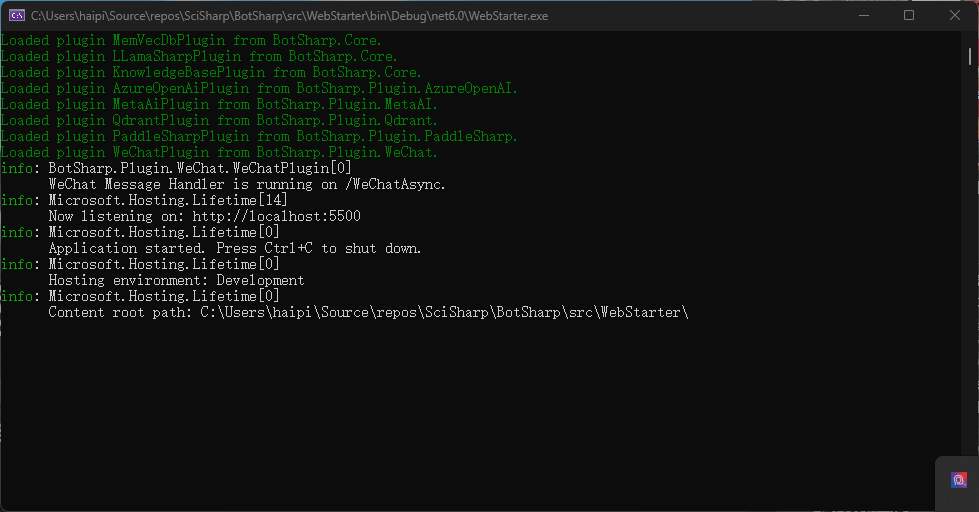
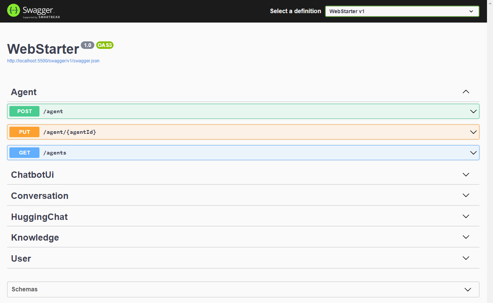
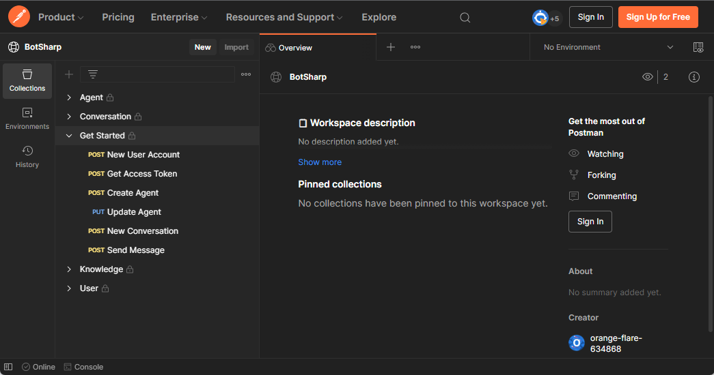

botsharp-doc
Installation
BotSharp strictly follows the modular design principle and adopts a structure in which views and logic are separated. It also provides a complete Web API interface to integrate with your own system. At the architectural level, Hook and EvenT are designed for different purposes, which can expand Chatbot’s dialogue capabilities without changing the kernel.
Run locally in development mode
If you are a .NET developer and want to develop extensions or fix bug for BotSharp, you would hit F5 to run it locally in debug mode. Make sure the Microsoft .NET SDK 6.0+ build environment Building solution using dotnet CLI (preferred).
Clone the source code and build
PS D:\> git clone https://github.com/SciSharp/BotSharp
PS D:\> cd BotSharp
PS D:\> dotnet build
Update configuration
BotSharp can work with serveral LLM providers. Update appsettings.json in your project. Below config is tasking Azure OpenAI as the LLM backend
"LlmProviders": [
{
"Provider": "azure-openai",
"Models": [
{
"Name": "gpt-35-turbo",
"ApiKey": "",
"Endpoint": "https://gpt-35-turbo.openai.azure.com/",
"Type": "chat",
"PromptCost": 0.0015,
"CompletionCost": 0.002
},
{
"Name": "gpt-35-turbo-instruct",
"ApiKey": "",
"Endpoint": "https://gpt-35-turbo-instruct.openai.azure.com/",
"Type": "text",
"PromptCost": 0.0015,
"CompletionCost": 0.002
}
]
}
]
Run backend web project
PS D:\> dotnet run --project src/WebStarter

Open REST APIs
You can access the APIs in browser through http://localhost:5500/swagger 
Test using the Postman
We have publicly shared the API collection of Postman, which is convenient for developers to develop quickly. 
So far, you have set up the Bot’s running and development environment, but you can’t actually test the Chatbot. The next step is about how to Create an Agent and start a conversation with the Chatbot.
Ignore below section if you’re going to just use REST API to interact with your bot.
Launch a BotSharp UI (Optional)
BotSharp has an official front-end project to be used in conjunction with the backend. The main function of this project is to allow developers to visualize various configurations of the backend.
PS D:\> git clone https://github.com/SciSharp/BotSharp-UI
PS D:\> cd BotSharp-UI
PS D:\> npm install
PS D:\> npm run dev
Update API url in .env to your localhost BotSharp backend service.
PUBLIC_SERVICE_URL=http://localhost:5500
PUBLIC_LIVECHAT_HOST=http://localhost:5015
Point your web browser at http://localhost:5015 and enjoy Chatbot with BotSharp.

Install in NuGet
If you don’t want to use the source code to experience this framework, you can also directly install the NuGet packages released by BotSharp, and install different function packages according to the needs of your project. Before installing, please read the documentation carefully to understand the functions that different modules can provide.
PS D:\> Install-Package BotSharp.Core